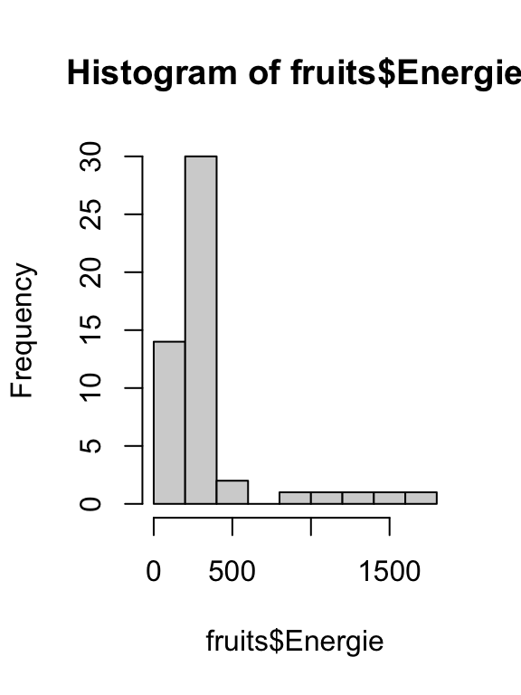
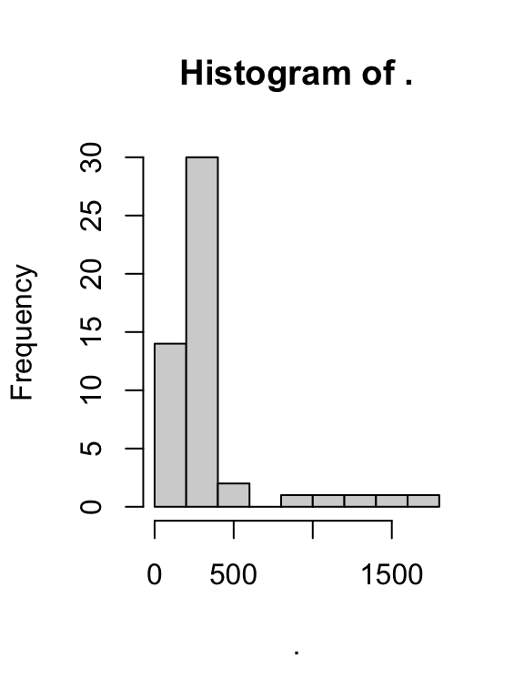

- On crée un projet
- On crée un script
- On charge les données
fruits
library(dplyr)
data("fruits", package = "minidebuter")
fruitslibrary(dplyr)
data("fruits", package = "minidebuter")
fruits #> # A tibble: 51 × 18 #> nom groupe Energie Eau Proteines Glucides Lipides Sucres #> <chr> <chr> <dbl> <dbl> <dbl> <dbl> <dbl> <dbl> #> 1 Abricot crus 194 87.1 0.81 9.01 0.25 6.7 #> 2 Abricot secs 1010 24.7 2.88 59.1 0.5 34.3 #> 3 Ananas exoti… 304 81.3 0.94 15.1 0.25 14.9 #> 4 Banane exoti… 383 75.8 1.06 19.7 0.25 15.6 #> 5 Canneberge secs 1410 14.6 0.25 76.4 1 72.8 #> 6 Cerise crus 235 85.7 0.81 13 0.25 10 #> 7 Citron crus 118 91.3 0.25 1.56 0.25 0.8 #> 8 Clementine crus 200 87 0.81 9.17 0.25 8.6 #> 9 CompoteMulti… compo… 279 82.9 0.25 15.3 0.08 14.6 #> 10 CompotePomme compo… 432 72.9 0.23 24.4 0.21 20.7 #> # ℹ 41 more rows #> # ℹ 10 more variables: Fructose <dbl>, Fibres <dbl>, Calcium <dbl>, #> # Magnesium <dbl>, Phosphore <dbl>, Potassium <dbl>, Zinc <dbl>, #> # BetaCarotene <dbl>, VitamineE <dbl>, VitamineC <dbl> class(fruits) #> [1] "tbl_df" "tbl" "data.frame"
tibble ?| Nom | Appelation officielle | Exemple |
|---|---|---|
| Vecteur | ??? | 1:10 |
| Facteur | factor |
gl(2, 2) |
| Matrice | matrix |
matrix(1:4, 2, 2) |
| Tableau | data.frame |
mtcars |
| Tableau | tibble |
fruits |
| Liste | list |
list(a = 1, b = 1:10, c = "Hello!") |
| Fonction | function |
sin, exp, log |
Par sécurité : je crée une copie de mes données
fruits2 <- fruits
On utilise le plus souvent l’opérateur $ :
fruits2$Sucres_ratio <- fruits2$Sucres / 100
Sur un tableau tab, je souhaite ajouter la colonne A :
tab$A <- nouvelles_valeurs
Attention :
A existe déjà, les valeurs sont écraséedata.frame, avec une erreur pour les tibblefruits2$recyclage <- c(0, 1)
Erreur : Assigned data `c(0, 1)` must be compatible with existing data. x Existing data has 51 rows. x Assigned data has 2 rows. ℹ Only vectors of size 1 are recycled. Run `rlang::last_error()` to see where the error occurred.
mtcars2 <- mtcars mtcars2$recyclage <- c(0, 1) mtcars2$recyclage #> [1] 0 1 0 1 0 1 0 1 0 1 0 1 0 1 0 1 0 1 0 1 0 1 0 1 0 1 0 1 0 1 0 1
%>%
f(g(x))g(x) %>% f()## Histogramme hist(fruits$Energie)

library(magrittr) fruits$Energie %>% hist()

Tidyverse: https://www.tidyverse.org/
Charger le package dplyr…
library(dplyr) # ou require(dplyr)
Ou bien charger tidyverse…
library(tidyverse)
… mais cela chargera d’autres packages en plus
Les données sont au format “tibble” : c’est comme des “data-frames” mais en mieux !
fruits #> # A tibble: 51 × 18 #> nom groupe Energie Eau Proteines Glucides Lipides Sucres #> <chr> <chr> <dbl> <dbl> <dbl> <dbl> <dbl> <dbl> #> 1 Abricot crus 194 87.1 0.81 9.01 0.25 6.7 #> 2 Abricot secs 1010 24.7 2.88 59.1 0.5 34.3 #> 3 Ananas exoti… 304 81.3 0.94 15.1 0.25 14.9 #> 4 Banane exoti… 383 75.8 1.06 19.7 0.25 15.6 #> 5 Canneberge secs 1410 14.6 0.25 76.4 1 72.8 #> 6 Cerise crus 235 85.7 0.81 13 0.25 10 #> 7 Citron crus 118 91.3 0.25 1.56 0.25 0.8 #> 8 Clementine crus 200 87 0.81 9.17 0.25 8.6 #> 9 CompoteMulti… compo… 279 82.9 0.25 15.3 0.08 14.6 #> 10 CompotePomme compo… 432 72.9 0.23 24.4 0.21 20.7 #> # ℹ 41 more rows #> # ℹ 10 more variables: Fructose <dbl>, Fibres <dbl>, Calcium <dbl>, #> # Magnesium <dbl>, Phosphore <dbl>, Potassium <dbl>, Zinc <dbl>, #> # BetaCarotene <dbl>, VitamineE <dbl>, VitamineC <dbl>
Nous allons voir ensemble quelques fonctions très pratiques de la librairie dplyr.
| # | Fonction (US) | Fonction (UK) | Description |
|---|---|---|---|
| 1 | mutate |
mutate |
Créer ou modifier des colonnes |
| 2 | select |
select |
Sélectionner des colonnes |
| 3 | relocate |
relocate |
Ré-arranger des colonnes |
| 4 | arrange |
arrange |
Trier les lignes |
| 5 | filter |
filter |
Sélectionner des lignes |
| 6 | group_by |
group_by |
Grouper des lignes |
| 7 | summarize |
summarise |
Résumer des groupes |
| 8 | count |
count |
Compter |
Avec la fonction mutate.
fruits2 <- fruits %>% mutate(Sucres_ratio = Sucres / 100) head(fruits2[, "Sucres_ratio"]) #> # A tibble: 6 × 1 #> Sucres_ratio #> <dbl> #> 1 0.067 #> 2 0.343 #> 3 0.149 #> 4 0.156 #> 5 0.728 #> 6 0.1
Avec les fonctions classiques.
fruits2 <- fruits fruits2$Sucres_ratio <- fruits2$Sucres / 100 head(fruits2[, "Sucres_ratio"]) #> # A tibble: 6 × 1 #> Sucres_ratio #> <dbl> #> 1 0.067 #> 2 0.343 #> 3 0.149 #> 4 0.156 #> 5 0.728 #> 6 0.1
Avec la fonction select.
fruits %>%
select(
Energie,
Sucres,
Lipides,
Proteines)
Avec les fonctions classiques.
fruits[,
c(
"Energie",
"Sucres",
"Lipides",
"Proteines")]
la fonction select est très versatile !
fruits %>% select(Energie:Proteines, - Eau)
On peut sélectionner des plages entières de colonnes sur la base de leurs noms, en enlever avec le -, combiner tout cela avec la fonction c()… ou pas !
Attention, la flexibilité a un coût !
Avec les fonctions arrange et desc.
fruits %>% select(Energie, Sucres, Fibres) %>% arrange(desc(Fibres)) #> # A tibble: 51 × 3 #> Energie Sucres Fibres #> <dbl> <dbl> <dbl> #> 1 1010 34.3 8.3 #> 2 425 8.5 6.8 #> 3 1410 72.8 5.7 #> 4 198 6.1 5.2 #> 5 969 38.1 5.1 #> 6 289 6.63 4.6 #> 7 206 5.4 4.3 #> 8 170 2.1 4.3 #> 9 1360 70.3 4.2 #> 10 293 12.2 4.1 #> # ℹ 41 more rows
Avec les fonctions classiques
fruits[
order(fruits$Fibres, decreasing = TRUE),
c("Energie", "Sucres", "Fibres")]
#> # A tibble: 51 × 3
#> Energie Sucres Fibres
#> <dbl> <dbl> <dbl>
#> 1 1010 34.3 8.3
#> 2 425 8.5 6.8
#> 3 1410 72.8 5.7
#> 4 198 6.1 5.2
#> 5 969 38.1 5.1
#> 6 289 6.63 4.6
#> 7 206 5.4 4.3
#> 8 170 2.1 4.3
#> 9 1360 70.3 4.2
#> 10 293 12.2 4.1
#> # ℹ 41 more rows
Avec la fonction filter.
fruits %>% filter(Sucres > 60) #> # A tibble: 2 × 18 #> nom groupe Energie Eau Proteines Glucides Lipides Sucres Fructose #> <chr> <chr> <dbl> <dbl> <dbl> <dbl> <dbl> <dbl> <dbl> #> 1 Cann… secs 1410 14.6 0.25 76.4 1 72.8 28.4 #> 2 Rais… secs 1360 16 3 73.2 0.9 70.3 36 #> # ℹ 9 more variables: Fibres <dbl>, Calcium <dbl>, Magnesium <dbl>, #> # Phosphore <dbl>, Potassium <dbl>, Zinc <dbl>, BetaCarotene <dbl>, #> # VitamineE <dbl>, VitamineC <dbl>
Avec les fonctions classiques.
fruits[fruits$Sucres > 60, ] #> # A tibble: 2 × 18 #> nom groupe Energie Eau Proteines Glucides Lipides Sucres Fructose #> <chr> <chr> <dbl> <dbl> <dbl> <dbl> <dbl> <dbl> <dbl> #> 1 Cann… secs 1410 14.6 0.25 76.4 1 72.8 28.4 #> 2 Rais… secs 1360 16 3 73.2 0.9 70.3 36 #> # ℹ 9 more variables: Fibres <dbl>, Calcium <dbl>, Magnesium <dbl>, #> # Phosphore <dbl>, Potassium <dbl>, Zinc <dbl>, BetaCarotene <dbl>, #> # VitamineE <dbl>, VitamineC <dbl>
Avec la fonction slice.
fruits %>% slice(3:10) #> # A tibble: 8 × 18 #> nom groupe Energie Eau Proteines Glucides Lipides Sucres Fructose #> <chr> <chr> <dbl> <dbl> <dbl> <dbl> <dbl> <dbl> <dbl> #> 1 Anan… exoti… 304 81.3 0.94 15.1 0.25 14.9 2.8 #> 2 Bana… exoti… 383 75.8 1.06 19.7 0.25 15.6 3.8 #> 3 Cann… secs 1410 14.6 0.25 76.4 1 72.8 28.4 #> 4 Ceri… crus 235 85.7 0.81 13 0.25 10 4.6 #> 5 Citr… crus 118 91.3 0.25 1.56 0.25 0.8 0.4 #> 6 Clem… crus 200 87 0.81 9.17 0.25 8.6 1.5 #> 7 Comp… compo… 279 82.9 0.25 15.3 0.08 14.6 6.92 #> 8 Comp… compo… 432 72.9 0.23 24.4 0.21 20.7 7.9 #> # ℹ 9 more variables: Fibres <dbl>, Calcium <dbl>, Magnesium <dbl>, #> # Phosphore <dbl>, Potassium <dbl>, Zinc <dbl>, BetaCarotene <dbl>, #> # VitamineE <dbl>, VitamineC <dbl>
Avec les fonctions classiques.
fruits[3:10, ] #> # A tibble: 8 × 18 #> nom groupe Energie Eau Proteines Glucides Lipides Sucres Fructose #> <chr> <chr> <dbl> <dbl> <dbl> <dbl> <dbl> <dbl> <dbl> #> 1 Anan… exoti… 304 81.3 0.94 15.1 0.25 14.9 2.8 #> 2 Bana… exoti… 383 75.8 1.06 19.7 0.25 15.6 3.8 #> 3 Cann… secs 1410 14.6 0.25 76.4 1 72.8 28.4 #> 4 Ceri… crus 235 85.7 0.81 13 0.25 10 4.6 #> 5 Citr… crus 118 91.3 0.25 1.56 0.25 0.8 0.4 #> 6 Clem… crus 200 87 0.81 9.17 0.25 8.6 1.5 #> 7 Comp… compo… 279 82.9 0.25 15.3 0.08 14.6 6.92 #> 8 Comp… compo… 432 72.9 0.23 24.4 0.21 20.7 7.9 #> # ℹ 9 more variables: Fibres <dbl>, Calcium <dbl>, Magnesium <dbl>, #> # Phosphore <dbl>, Potassium <dbl>, Zinc <dbl>, BetaCarotene <dbl>, #> # VitamineE <dbl>, VitamineC <dbl>
Avec la fonction group_by :
fruits %>% group_by(groupe) #> # A tibble: 51 × 18 #> # Groups: groupe [4] #> nom groupe Energie Eau Proteines Glucides Lipides Sucres #> <chr> <chr> <dbl> <dbl> <dbl> <dbl> <dbl> <dbl> #> 1 Abricot crus 194 87.1 0.81 9.01 0.25 6.7 #> 2 Abricot secs 1010 24.7 2.88 59.1 0.5 34.3 #> 3 Ananas exoti… 304 81.3 0.94 15.1 0.25 14.9 #> 4 Banane exoti… 383 75.8 1.06 19.7 0.25 15.6 #> 5 Canneberge secs 1410 14.6 0.25 76.4 1 72.8 #> 6 Cerise crus 235 85.7 0.81 13 0.25 10 #> 7 Citron crus 118 91.3 0.25 1.56 0.25 0.8 #> 8 Clementine crus 200 87 0.81 9.17 0.25 8.6 #> 9 CompoteMulti… compo… 279 82.9 0.25 15.3 0.08 14.6 #> 10 CompotePomme compo… 432 72.9 0.23 24.4 0.21 20.7 #> # ℹ 41 more rows #> # ℹ 10 more variables: Fructose <dbl>, Fibres <dbl>, Calcium <dbl>, #> # Magnesium <dbl>, Phosphore <dbl>, Potassium <dbl>, Zinc <dbl>, #> # BetaCarotene <dbl>, VitamineE <dbl>, VitamineC <dbl>
Les données sont prêtes à être “traitées” groupe par groupe. PS : L’opération ungroup() permet d’enlever les groupes.
Avec la fonction summarize.
fruits %>% group_by(groupe) %>% summarize(SucreMoyen = mean(Sucres)) #> # A tibble: 4 × 2 #> groupe SucreMoyen #> <chr> <dbl> #> 1 compote 15.5 #> 2 crus 9.68 #> 3 exotique 11.4 #> 4 secs 55.0
Avec les fonctions classiques.
aggregate(fruits$Sucres,
by = list(fruits$groupe),
FUN = mean)
#> Group.1 x
#> 1 compote 15.533333
#> 2 crus 9.684242
#> 3 exotique 11.380000
#> 4 secs 54.980000
Calculer l’énergie moyenne, la teneur en sucres médiane et le maximum de la teneur en Fibres par groupe de fruits et trier le tout par ordre décroissant du maximum de la teneur en Fibres !
| Sélectionne | Ne sélectionne pas | |
| Ne transforme pas | select |
rename |
| Peut transformer | transmute |
mutate |
Avec le “verbe” count :
fruits %>% count(groupe) #> # A tibble: 4 × 2 #> groupe n #> <chr> <int> #> 1 compote 3 #> 2 crus 33 #> 3 exotique 10 #> 4 secs 5
On peut ensuite ranger les résultats par ordre décroissant :
fruits %>% count(groupe) %>% arrange(desc(n)) #> # A tibble: 4 × 2 #> groupe n #> <chr> <int> #> 1 crus 33 #> 2 exotique 10 #> 3 secs 5 #> 4 compote 3
La fonction cut permet de transformer un vecteur de valeurs numériques en un facteur contenant des intervalles :
x : le vecteur de valeurs numériques,breaks : les limites des intervalles.Exemple :
entiers <- 1:5 cut(entiers, c(0, 2, 5)) #> [1] (0,2] (0,2] (2,5] (2,5] (2,5] #> Levels: (0,2] (2,5]
Par exemple, compter dans chaque groupe le nombre de fruits dont la teneur en Vitamine C est inférieure ou supérieure à 50 :
fruits %>% mutate(VitCqual = cut(VitamineC, c(0, 50, 100))) %>% count(groupe, VitCqual, name = "N") #> # A tibble: 6 × 3 #> groupe VitCqual N #> <chr> <fct> <int> #> 1 compote (0,50] 3 #> 2 crus (0,50] 32 #> 3 crus (50,100] 1 #> 4 exotique (0,50] 7 #> 5 exotique (50,100] 3 #> 6 secs (0,50] 5
Ce n’est pas facile, il vaut mieux utiliser la fonction table :
library(tidyr)
fruits %>%
mutate(VitCqual = cut(VitamineC, c(0, 50, 100))) %>%
count(groupe, VitCqual, name = "N") %>%
pivot_wider(id_cols = groupe,
names_from = VitCqual,
values_from = N)
#> # A tibble: 4 × 3
#> groupe `(0,50]` `(50,100]`
#> <chr> <int> <int>
#> 1 compote 3 NA
#> 2 crus 32 1
#> 3 exotique 7 3
#> 4 secs 5 NA
Avec les illustrations de Allison Horst (https://www.allisonhorst.com/)